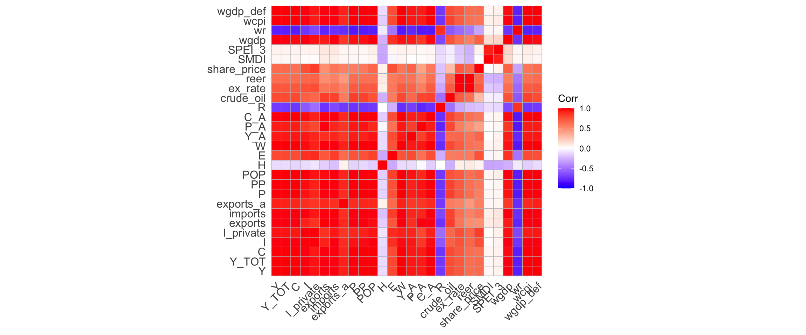

In this page, three types of data are merged into a single dataset that will later be used to analyze the response of the economy to a weather shock, using both a VAR model (Chapter 8) and a DSGE model (Chapter 10).
The first part introduces functions for seasonal adjustment, considering three alternative methods:
Using the X-13ARIMA-SEATS software,
Estimating a trend with a Hodrick–Prescott filter,
Estimating a linear trend with an ordinary least squares model.
The subsequent parts describe how we:
Import and pre-process the rest-of-world data (Section 6.2),
Load the national macroeconomic variables (Section 6.3),
These datasets are then merged into a single panel (Section 6.5), after which detrending functions are applied and all variables are transformed into real, per-capita terms (Section 6.6).
library(tidyverse)
── Attaching core tidyverse packages ──────────────────────── tidyverse 2.0.0 ──
✔ dplyr 1.1.4 ✔ readr 2.1.5
✔ forcats 1.0.0 ✔ stringr 1.5.2
✔ ggplot2 4.0.0 ✔ tibble 3.3.0
✔ lubridate 1.9.4 ✔ tidyr 1.3.1
✔ purrr 1.1.0
── Conflicts ────────────────────────────────────────── tidyverse_conflicts() ──
✖ dplyr::filter() masks stats::filter()
✖ dplyr::lag() masks stats::lag()
ℹ Use the conflicted package (<http://conflicted.r-lib.org/>) to force all conflicts to become errors
library(readxl)
Let us load the graphs theme functions (See Chapter 1):
source("../scripts/functions/utils.R")
6.1 Functions for Seasonal Adjustment
We define a function, remove_seasonality() as a wrapper to the seas() function from {seasonal}. This function uses X-13ARIMA-SEATS, the seasonal adjustment software developed by the United States Census Bureau, to remove seasonality of a column in a tibble.
#' Remove seasonality (or return trend) using X-13ARIMA-SEATS#'#' @param data A data frame.#' @param var The column in `data` to adjust (unquoted or string).#' @param start Start time for the `ts()` (e.g., c(1999, 1)).#' @param freq Frequency of the series (default 4 = quarterly).#'#' @return A tibble with columns: year, quarter, YEARS, and the adjusted series.remove_seasonality <-function(data, variable, start, freq =4) {if (!freq %in%c(4, 12)) {stop("`freq` must be either 4 (quarterly) or 12 (monthly).", call. =FALSE) } v_sym <- rlang::ensym(variable) v_name <- rlang::as_name(v_sym)# Turn in a ts object data_ts <- data |>pull(v_sym) |> stats::ts(start = start, frequency = freq)# X-13ARIMA-SEATS fit <- seasonal::seas(data_ts)# Extract trend (seasonaly adjuster series) trend <- seasonal::final(fit) time_data <- stats::time(data_ts)if (freq ==4) { time_data <- zoo::as.yearqtr(time_data) res <- tibble::tibble(year =as.numeric(format(time_data, "%Y")),quarter =as.numeric(format(time_data, "%q")),!!v_name := trend ) |> dplyr::mutate(YEARS = year +c(0, 0.25, 0.5, 0.75)[quarter] ) } elseif (freq ==12) { time_data_q <- zoo::as.yearqtr(time_data) time_data <- zoo::as.yearmon(time_data) res <- tibble::tibble(year =as.numeric(format(time_data, "%Y")),month =as.numeric(format(time_data, "%m")),quarter =as.numeric(format(time_data_q, "%q")),!!v_name := trend ) |> dplyr::mutate(YEARS =as.numeric(time_data) ) } res}
We also define another functions to remove trend: myfilter(). It calls one of the two other functions we define, hp_filter() or lin_trend() to remove seasonality in a series. With hp_filter() we use a Hodrick-Prescott filter from {mFilter} (using \(\lambda=1600\), for quarterly data). With lin_trend(), we estimate a linear trend and return it.
#' Detrends a time serie#' #' @param x Serie to be detrended (numeric).#' @param type Type of the method applied: Hodrick-Prescott (hp) of OLS (ols).myfilter <-function(x, type =c("hp", "ols")) {if (type =="hp") { res <-hp_filter(x) res <-log(x / res) *100 } elseif (type =="ols") { x_log <-log(x)*100 trend_x <-lin_trend(x_log) res <- x_log - trend_x } else {stop("Not the right filter") } res}
#' Applies the HP filter on a quarterly time serie#' #' @param x Series for which to retrieve the trend.#' @returns The trend part of the series.#' #' @importFrom mFilter hpfilter#' hp_filter <-function(x) { serie <- xif (any(is.na(x))) { serie <- x[!is.na(x)] } res <- mFilter::hpfilter(serie, freq =1600, type ="lambda")$trend |>as.vector()if (any(is.na(x))) { x[!is.na(x)] <- res res <- x } res}
#' Returns the linear trend of `x`#' lin_trend <-function(x, trend_val = df$YEARS) { serie <- xif (any(is.na(x))) { serie <- x[!is.na(x)] trend_val <- trend_val[!is.na(x)] } df_tmp <-data.frame(x = serie) |>mutate(cste =1, trend = trend_val) reg <-lm(x ~1+ trend, data = df_tmp) resul <-coef(reg)[["trend"]]*df_tmp$trend +coef(reg)[["(Intercept)"]]if (any(is.na(x))) { x[!is.na(x)] <- resul resul <- x } resul}
6.2 Trading Partners
In Chapter 8, we will estimate a VAR model with three blocks:
Domestic economy block: corresponds to New Zealand.
New Zealand is a small open economy, meaning that its business cycles are influenced by shocks affecting its main trading partners.
To account for these external effects, we construct a synthetic rest-of-world GDP based on the top five partners: Australia, Germany, Japan, the United Kingdom, and the United States.
The following macroeconomic series are imported for each country:
Table 6.1: Source of the different macroeconomic series
Variable
Source
Frequency
Purpose
Gross domestic product
OECD QNA
Quarterly
Economic conditions
Short-term interest rate
OECD EO100
Quarterly
Global monetary stance
Consumer Price Index (CPI)
OECD QNA
Quarterly
Inflation proxy
GDP Deflator
OECD QNA archive
Quarterly
Price base consistency
Population (15–64)
OECD historical population data
Annual → Quarterly
Scaling variable
The series are in Excel files in ../data/Economic/Rest-world. In the codes that follow, we harmonize them and, when necessary, rebase them to 2010 = 100. Annual population data are converted to quarterly frequency using the Denton–Cholette disaggregation method.
We set a reference year for the index:
ref_year <-2010
6.2.1 Gross Domestic Product
Source: OECD
Quarterly GDP and components - expenditure approach, US Dollars
Frequency of observation: Quarterly
Price base: Current prices
Combined transaction: Gross domestic product, Total economy
The population data is given at an annual rate. We use the Denton-Cholette method to estimate quarterly values, thanks to the td() function from {tempdisagg}. We define a function, pop_quarterly() as a wrapper function to do so, for a specific country.
library(tempdisagg)#' Estimate quarterly population from annual values#' #' @param country Name of the country in the dataset `pop`.#' pop_quarterly <-function(country) { x <- pop |>filter(country %in%!!country) x_ts <-ts(x$pop, start =as.numeric(x$year[1]))# Forecast 3 years ahead x_f <- forecast::forecast(forecast::auto.arima(x_ts), h =3)# Disaggregate x_ts <-ts(c(x_ts, x_f$mean), start =start(x_ts)) res <-predict(td(x_ts ~1, method ="denton-cholette", conversion ="average")) res <-tibble(YEARS =as.vector(time(res)), country = country, pop =as.vector(res) )# Change base year ref_pop <- res |>filter(YEARS == ref_year) |>pull("pop") res |>mutate(pop = pop / ref_pop *100)}
We apply the pop_quarterly() on each of the trading partner’s population data.
# A tibble: 120 × 5
YEARS wgdp wcpi wgdp_def wr
<dbl> <dbl> <dbl> <dbl> <dbl>
1 1987 NA 60.4 NA NA
2 1987. NA 61.1 NA NA
3 1988. NA 61.5 NA NA
4 1988. NA 61.9 NA NA
5 1988 NA 62.2 NA NA
6 1988. NA 62.7 NA NA
7 1988. NA 63.3 NA NA
8 1989. NA 63.9 NA NA
9 1989 NA 64.4 NA NA
10 1989. NA 65.5 NA NA
# ℹ 110 more rows
6.3 Macroeconomic Variables
The macroeconomic variables are in an Excel file:
excel_file <-"../data/Economic/data_nz.xls"
6.3.1 GDP (All industries & Agriculture)
GDP (All industries & Agriculture)—-
Seasonnaly adjusted
Source: OECD
Frequency: quarterly
gdp <- readxl::read_excel(path = excel_file, sheet ="Y", skip =2)gdp <- gdp |> dplyr::select( date, `NZNTAGCL Index`, # Agriculture Chain Volume`NZNTPRAS Index`, # GDP Chain Volume`NZNTNOM Index`# NZ Expenditure Based GDP (Nominal, SA, NZD) ) |>mutate(agri_share =`NZNTAGCL Index`/`NZNTPRAS Index`,gdp_a = agri_share *`NZNTNOM Index` ) |>rename(gdp_tot =`NZNTNOM Index`) |>mutate(gdp = gdp_tot - gdp_a,year =as.numeric(str_sub(date, 1, 4)),quarter =as.numeric(str_sub(date, 6, 7)),quarter =ceiling(quarter /3),YEARS = year + quarter /4-0.25 ) |>select(YEARS, gdp, gdp_a, gdp_tot)
national_weather_quarterly <- national_weather_quarterly |>mutate(YEARS = year + quarter/4-0.25)
Warning
Negative values of the Soil Moisture Deficit index depict droughts (see Figure 6.6 ). In the impulse response functions, we will impulse positive standard deviation shocks. To depict a shock corresponding to a increase in dryness, we change the sign of the SMDI variable (see Figure 6.7).
Joining with `by = join_by(YEARS)`
Joining with `by = join_by(YEARS)`
Joining with `by = join_by(YEARS)`
Joining with `by = join_by(YEARS)`
Joining with `by = join_by(YEARS)`
Joining with `by = join_by(YEARS)`
Joining with `by = join_by(YEARS)`
Joining with `by = join_by(YEARS)`
Joining with `by = join_by(YEARS)`
Joining with `by = join_by(YEARS)`
Joining with `by = join_by(YEARS)`
Joining with `by = join_by(YEARS)`
Joining with `by = join_by(YEARS)`
Joining with `by = join_by(YEARS)`
Joining with `by = join_by(YEARS)`
Joining with `by = join_by(YEARS)`
df <- donnees_brutes_nz |>rename(Y = gdp, Y_TOT = gdp_tot, Y_A = gdp_a, C_A = c_a, C = c) |>select( YEARS, Y, Y_TOT, C, I, I_private, exports, imports, exports_a, P, PP, POP, H, E, W, Y_A, P_A, C_A, R, crude_oil, ex_rate, reer, share_price, SMDI, SPEI_3, wgdp, wr, wcpi, wgdp_def) |>ungroup()
Warning: `aes_string()` was deprecated in ggplot2 3.0.0.
ℹ Please use tidy evaluation idioms with `aes()`.
ℹ See also `vignette("ggplot2-in-packages")` for more information.
ℹ The deprecated feature was likely used in the ggcorrplot package.
Please report the issue at <https://github.com/kassambara/ggcorrplot/issues>.
Figure 6.8: Correlation Matrix

6.6 Detrending
Selecting Hodrick-Prescott filter:
type <-"hp"
We will use the GDP deflator as the inflation time serie rather than CPI.